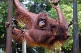
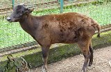
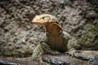

 <div class="upage hidden black" id="ragunan">
            <div class="upage-outer">
                <div class="uib-header header-bg container-group inner-element uib_w_67" data-uib="layout/header" data-ver="0">
                    <h2>Wisata Jakarta</h2>
                    <div class="widget-container wrapping-col single-centered"></div>
                    <div class="widget-container content-area horiz-area wrapping-col left"></div>
                    <div class="widget-container content-area horiz-area wrapping-col right">
                        <button class="btn widget uib_w_88 d-margins btn-default mustard" data-uib="twitter%20bootstrap/button" data-ver="1" id="bckrg"><i class="glyphicon glyphicon-chevron-left" data-position="icon only"></i>
                        </button>
                    </div>
                </div>
                <div class="upage-content ac0 content-area vertical-col left" id="page_88_11"></div>

                <!-- tab -->
                <div class="container">
                    <h3>Kebun Binatang Ragunan</h3>
                </div>

                <div id="exTab2" class="container">
                    <ul class="nav nav-tabs">
                        <li class="active">
                            <a href="#49" data-toggle="tab">Beranda</a>
                        </li>
                        <li><a href="#50" data-toggle="tab">Informasi</a>
                        </li>
                        <li><a href="#51" data-toggle="tab">Fasilitas</a>
                        </li>
                        <li><a href="#52" data-toggle="tab">Peta</a>
                        </li>
                        <li class="dropdown">
                            <a href="#" class="dropdown-toggle" data-toggle="dropdown" data-hover="dropdown"> Aneka Satwa <b class="caret"></b></a>
                            <ul class="dropdown-menu">
                                <li><a href="#dropdown501" data-toggle="tab">Harimau</a>
                                </li>
                                <li><a href="#dropdown502" data-toggle="tab">Beruang</a>
                                </li>
                                <li><a href="#dropdown503" data-toggle="tab">Orang Utan</a>
                                </li>
                                <li><a href="#dropdown504" data-toggle="tab">Singa</a>
                                </li>
                                <li><a href="#dropdown505" data-toggle="tab">Gorilla</a>
                                </li>
                                <li><a href="#dropdown506" data-toggle="tab">Monyet Kokah</a>
                                </li>
                                <li><a href="#dropdown507" data-toggle="tab">Anoa</a>
                                </li>
                                <li><a href="#dropdown508" data-toggle="tab">Simpanse</a>
                                </li>
                                <li><a href="#dropdown509" data-toggle="tab">Gajah</a>
                                </li>
                                <li><a href="#dropdown510" data-toggle="tab">Macan</a>
                                </li>
                                <li><a href="#dropdown511" data-toggle="tab">Komodo</a>
                                </li>
                                <li><a href="#dropdown512" data-toggle="tab">Biawak</a>
                                </li>
                                <li><a href="#dropdown513" data-toggle="tab">Burung Pelikan</a>
                                </li>
                                <li><a href="#dropdown514" data-toggle="tab">Burung Flamingo</a>
                                </li>
                                <li><a href="#dropdown515" data-toggle="tab">Burung Merak Biru</a>
                                </li>
                                <li><a href="#dropdown516" data-toggle="tab">Burung Elang</a>
                                </li>
                            </ul>
                        </li>
                    </ul>
                    <div class="tab-content ">
                        <div class="tab-pane fade" id="dropdown501">
                            <h3>Harimau</h3>
                            
                            <br>
                            <p>Harimau sumatera (Panthera tigris sumatrae) adalah subspesies harimau yang habitat aslinya di pulau Sumatera. memiliki ciri kulit loreng coklat kekuning-kuningan dengan garis-garis hitam vertikal dari kepala sampai ekor. Tinggi
                                dapat mencapai 60 cm, dengan panjang 250 cm. Merupakan sub spesies Harimau terakhir yang ada di Indonesia.</p>
                            <br>
                            <iframe src="harimau.html" width="100%" height="700px" frameborder="80" style="border:0" allowfullscreen=""></iframe>
                        </div>

                        <div class="tab-pane fade" id="dropdown502">
                            <h3>Beruang Madu</h3>
                            
                            <p>Beruang madu (Helarctos malayanus) memiliki seluruh tubuh berwarna hitam mengkilap, ekor sangat pendek, moncong abu-abu. Dada atas ada bercak putih kekuningan membentuk huruf “V” atau “C”. Berat tubuh dapat mencapai 60 kg.</p>
                            <br>
                            <iframe src="beruang.html" width="100%" height="700px" frameborder="80" style="border:0" allowfullscreen=""></iframe>

                        </div>

                        <div class="tab-pane fade" id="dropdown503">
                            <h3>Orang Utan</h3>
                            
                            <p>Orangutan adalah sejenis kera besar dengan lengan panjang dan berbulu kemerahan atau cokelat, yang hidup di hutan tropika Indonesia dan Malaysia, khususnya di Pulau Kalimantan dan Sumatera. Orangutan memiliki tubuh yang gemuk
                                dan besar, berleher besar, lengan yang panjang dan kuat, kaki yang pendek dan tertunduk, dan tidak mempunyai ekor.</p>
                            <br>
                            <iframe src="orgutan.html" width="100%" height="700px" frameborder="80" style="border:0" allowfullscreen=""></iframe>
                        </div>

                        <div class="tab-pane fade" id="dropdown504">
                            <h3>Singa</h3>
                            
                            <p>Singa (Panthera leo) adalah spesies hewan dari keluarga felidae atau jenis kucing. Singa merupakan hewan yang hidup berkelompok. Biasanya terdiri dari seekor jantan dan banyak betina. Kelompok ini menjaga daerah kekuasaannya.</p>
                            <br>
                            <iframe src="singa.html" width="100%" height="700px" frameborder="80" style="border:0" allowfullscreen=""></iframe>
                        </div>

                        <div class="tab-pane fade" id="dropdown505">
                            <h3>Gorilla</h3>
                            
                            <p>Gorila adalah jenis primata yang terbesar. Gorila berasal dari hutan tropis di Afrika. 97-98% DNA gorila identik dengan DNA manusia. Gorila adalah spesies kedua setelah simpanse yang terdekat dengan manusia. Ada dua spesies
                                dalam genus gorila, yaitu gorila timur (eastern gorila) dan gorilla barat (western gorila).</p>
                            <br>
                            <iframe src="gorilla.html" width="100%" height="700px" frameborder="80" style="border:0" allowfullscreen=""></iframe>
                        </div>

                        <div class="tab-pane fade" id="dropdown506">
                            <h3>Monyet Kokah</h3>
                            
                            <p>Monyet Kokah (Presbytis siamensis) adalah spesies primata dalam keluarga Cercopithecidae. Mereka tersebar di Thailand-Semenanjung Malaya, Kepulauan Riau dan Sumatra. Empat subspesies, siamensis (mencalonkan), Kana, paenulata
                                dan rhionis, diakui di sini, tapi taxonomyis sengketa dan membutuhkan tinjauan, dan sudah termasuk P. natunae sebagai subspesies, atau alternatif keduanya telah dianggap subspesies dari P. femoralis.</p>
                            <br>
                            <iframe src="kokah.html" width="100%" height="700px" frameborder="80" style="border:0" allowfullscreen=""></iframe>
                        </div>

                        <div class="tab-pane fade" id="dropdown507">
                            <h3>Anoa</h3>
                            
                            <p>Anoa adalah hewan endemik Sulawesi, sekaligus maskot provinsi Sulawesi Tenggara. Anoa biasa disebut sapihutan adalah subgenus dari Bubalus terdiri dari dua spesies asli Indonesia. Mereka hidup di hutan hujan, semak, dan rawa.</p>
                            <br>
                            <iframe src="anoa.html" width="100%" height="700px" frameborder="80" style="border:0" allowfullscreen=""></iframe>
                        </div>

                        <div class="tab-pane fade" id="dropdown508">
                            <h3>Simpanse</h3>
                            
                            <p>Simpanse (Pan troglodytes) adalah anggota dari keluarga Hominidae, bersama dengan gorila, manusia, dan orangutan. Simpanse terpisah dengan manusia dalam ranting keluarga sekitar 4 – 6 juta tahun lalu. Dua spesies simpanse di
                                atas adalah kerabat terdekat manusia, semuanya anggota dari suku Hominini (berikut dengan spesies yang punah dari sub-suku Hominina). Simpanse satu-satunya anggota yang diketahui dari sub-suku Panina. Kedua spesies Pan
                                tersebut terpisah sekitar 1 juta tahun lalu.</p>
                            <br>
                            <iframe src="simpanse.html" width="100%" height="700px" frameborder="80" style="border:0" allowfullscreen=""></iframe>
                        </div>

                        <div class="tab-pane fade" id="dropdown509">
                            <h3>Gajah Sumatera</h3>
                            
                            <p>Gajah sumatera adalah subspesies dari gajah asia yang hanya berhabitat di pulau Sumatera. Gajah sumatera berpostur lebih kecil daripada subspesies gajah india. Populasinya semakin menurun dan menjadi spesies yang sangat terancam.</p>
                            <br>
                            <iframe src="gajah.html" width="100%" height="700px" frameborder="80" style="border:0" allowfullscreen=""></iframe>
                        </div>

                        <div class="tab-pane fade" id="dropdown510">
                            <h3>Macan Tutul</h3>
                            
                            <p>Macan tutul (Panthera pardus) adalah salah satu dari lima kucing besar dalam genus Panthera. Ini adalah anggota dari keluarga Felidae dengan berbagai di beberapa bagian sub-Sahara Afrika, Asia Barat, Timur Tengah, Asia Selatan
                                dan Asia Tenggara ke Siberia.</p>
                            <br>
                            <iframe src="macan.html" width="100%" height="700px" frameborder="80" style="border:0" allowfullscreen=""></iframe>
                        </div>

                        <div class="tab-pane fade" id="dropdown511">
                            <h3>Komodo</h3>
                            
                            <p>Komodo adalah spesies kadal besar yang ditemukan di pulau-pulau Indonesia Komodo, Rinca, Flores, Gili Motang, dan Padar. Merupakan anggota keluarga biawak (Varanidae), dan spesies kadal terbesar yang masih hidup, panjang maksimalnya
                                dalap mencapai 3 meter (10 kaki) dan beratnya bisa mencapai 70 kilogram.</p>
                            <br>
                            <iframe src="komodo.html" width="100%" height="700px" frameborder="80" style="border:0" allowfullscreen=""></iframe>
                        </div>

                        <div class="tab-pane fade" id="dropdown512">
                            <h3>Biawak</h3>
                            
                            <p>Biawak Salvador (Varanus salvator) merupakan salah satu kadal terbesar di Asia Selatan dan Tenggara. Spesies biawak ini banyak ditemukan di Bangladesh, Sri Lanka and India, Semenanjung Malaya, dan berbagai pulau di Indonesia.
                                Habitat biawak ini tinggal di daerah dekat dengan air.</p>
                            <br>
                            <iframe src="biawak.html" width="100%" height="700px" frameborder="80" style="border:0" allowfullscreen=""></iframe>
                        </div>

                        <div class="tab-pane fade" id="dropdown513">
                            <h3>Burung Pelikan</h3>
                            
                            <p>Burung undan atau pelikan adalah burung air yang memiliki kantung di bawah paruhnya, dan merupakan bagian dari keluarga burung Pelecanidae. Bersama burung pecuk, pecuk ular, gannet, angsa batu, dan cikalang, mereka membentuk
                                ordo Pelecaniformes. Pelikan modern ditemukan di semua benua kecuali Antartika. Mereka hidup umumnya di wilayah hangat, dan mereka tidak dijumpai di wilayah kutub, laut dalam, kepulauan samudra, dan benua Amerika Selatan.</p>
                            <br>
                            <iframe src="pelikan.html" width="100%" height="700px" frameborder="80" style="border:0" allowfullscreen=""></iframe>
                        </div>

                        <div class="tab-pane fade" id="dropdown514">
                            <h3>Burung Flamingo</h3>
                            
                            <p>Flamingo adalah spesies burung berkaki jenjang yang hidup berkelompok. Mereka berasal dari genus Phoenicopterus dan familia Phoenicopteridae. Burung ini ditemukan di belahan bumi barat dan timur, namun lebih banyak terdapat
                                di belahan timur. Terdapat 4 spesies flamingo di Amerika dan 2 jenis flamingo di Dunia Lama</p>
                            <br>
                            <iframe src="flamingo.html" width="100%" height="700px" frameborder="80" style="border:0" allowfullscreen=""></iframe>
                        </div>

                        <div class="tab-pane fade" id="dropdown515">
                            <h3>Burung Merak Biru</h3>
                            
                            <p>Merak biru (Pavo cristatus) adalah burung besar dan berwarna cerah dari keluarga asli burung dari Asia Selatan, namun diperkenalkan di banyak bagian lain dunia seperti Amerika Serikat, Meksiko, Honduras, Kolombia, Guyana, Suriname,
                                Brazil, Uruguay, Argentina, Afrika Selatan, Madagaskar, Papua, dan Australia.</p>
                            <br>
                            <iframe src="merak.html" width="100%" height="700px" frameborder="80" style="border:0" allowfullscreen=""></iframe>
                        </div>

                        <div class="tab-pane fade" id="dropdown516">
                            <h3>Burung Elang Bondol</h3>
                            
                            <p>Elang bondol atau dalam nama ilmiahnya adalah Haliastur Indus adalah spesies dari genus dari Haliastur. Burung Elang Bondol berukuran sedang (45 cm), berwarna putih dan coklat pirang. Elang bondol yang remaja berkarakter seluruh
                                tubuh kecoklatan dengan coretan pada dada. Warna berubah putih keabu-abuan pada tahun kedua, dan mencapai bulu dewasa sepenuhnya pada tahun ketiga. Ujung ekor bundar. Iris coklat, paruh dan sera abu-abu kehijauan, kaki
                                dan tungkai kuning suram.</p>
                            <br>
                            <iframe src="elang.html" width="100%" height="700px" frameborder="80" style="border:0" allowfullscreen=""></iframe>
                        </div>

                        <div class="tab-pane active" id="49">
                            <h3>Deskripsi Kebun Binatang Ragunan</h3>
                            <br>
                            <center>
                                
                            </center>

                            <p>Kebun Binatang Ragunan adalah kebun binatang pertama di Indonesia. Kebun binatang ini didirikan pada tahun 1864 dengan nama Planten En Dierentuin yang berarti "Tanaman dan Kebun Binatang." Terletak pada tanah seluas 10 hektare
                                di kawasan Cikini, Menteng, Jakarta Pusat yang merupakan pemberian Raden Saleh. Gubernur DKI Jakarta Ali Sadikin meresmikan Taman Margasatwa Ragunan pada 22 Juni 1966.</p>

                            <div class="container">
                                <div id="myCarousel13" class="carousel slide" data-ride="carousel">
                                    <!-- Indicators -->
                                    <ol class="carousel-indicators">
                                        <li data-target="#myCarousel" data-slide-to="0" class="active"></li>
                                        <li data-target="#myCarousel" data-slide-to="1"></li>
                                        <li data-target="#myCarousel" data-slide-to="2"></li>
                                    </ol>

                                    <!-- Wrapper for slides -->
                                    <div class="carousel-inner" role="listbox">
                                        <div class="item active">
                                            
                                        </div>

                                        <div class="item">
                                            
                                        </div>

                                        <div class="item">
                                            
                                        </div>

                                        <div class="item">
                                            
                                        </div>

                                        <div class="item">
                                            
                                        </div>

                                        <div class="item">
                                            
                                        </div>

                                        <div class="item">
                                            
                                        </div>

                                    </div>

                                    <!-- Left and right controls -->
                                    <a class="left carousel-control" href="#myCarousel13" data-slide="prev">
                                        <span class="glyphicon glyphicon-chevron-left"></span>
                                        <span class="sr-only">Previous</span>
                                    </a>
                                    <a class="right carousel-control" href="#myCarousel13" data-slide="next">
                                        <span class="glyphicon glyphicon-chevron-right"></span>
                                        <span class="sr-only">Next</span>
                                    </a>
                                </div>
                            </div>
                            <h3>Koleksi Kebun Binatang Ragunan</h3>
                            <p>Kebun binatang seluas 140 hektare ini didirikan pada tahun 1864. Di dalamnya, terdapat berbagai koleksi yang terdiri dari 295 spesies dan 4040 spesimen.</p>

                            <!--div class="list-group widget uib_w_100 d-margins" data-uib="twitter%20bootstrap/list_group" data-ver="1">
                                <a class="list-group-item allow-badge widget uib_w_101 yellow" data-uib="twitter%20bootstrap/list_item" data-ver="1"><span class="badge"> </span>
                            <h4 class="list-group-item-heading">Koleksi Satwa</h4>
                        </a>
                            </div-->

                        </div>

                        <div class="tab-pane" id="50">
                            <div class="container">
                                <div class="col-md-6 col-sm-6">

                                    <div class="panel-group wrap" id="accordion" role="tablist" aria-multiselectable="true">
                                        <div class="panel">
                                            <div class="panel-heading" role="tab" id="heading38">
                                                <h4 class="panel-title">
        <a role="button" data-toggle="collapse" data-parent="#accordion" href="#collapse38" aria-expanded="true" aria-controls="collapse38">
         Waktu Operasional
        </a>
      </h4>
                                            </div>
                                            <div id="collapse38" class="panel-collapse collapse in" role="tabpanel" aria-labelledby="heading38">
                                                <div class="panel-body">
                                                    <h4>Selasa - Minggu</h4>
                                                    <p>06.00 - 16.00 WIB</p>

                                                </div>
                                            </div>
                                        </div>
                                        <!-- end of panel -->

                                        <div class="panel">
                                            <div class="panel-heading" role="tab" id="heading39">
                                                <h4 class="panel-title">
        <a class="collapsed" role="button" data-toggle="collapse" data-parent="#accordion" href="#collapse40" aria-expanded="false" aria-controls="collapse40">
          Tiket Masuk
        </a>
      </h4>
                                            </div>
                                            <div id="collapse40" class="panel-collapse collapse" role="tabpanel" aria-labelledby="heading39">
                                                <div class="panel-body">
                                                    <!-- list info -->
                                                    <div class="list-group">

                                                        <a href="#" class="list-group-item list-group-item-info">

                                                            <h4>Anak - anak</h4>
                                                            <p>Rp 3.000</p>
                                                            <br>
                                                            <h4>Dewasa</h4>
                                                            <p>Rp 4.000</p>

                                                        </a>

                                                    </div>
                                                </div>
                                            </div>
                                        </div>
                                        <!-- end of panel -->
                                    </div>
                                    <!-- end of #accordion -->

                                </div>
                                <!-- end of wrap -->

                            </div>
                            <!-- end of container -->
                        </div>

                        <div class="tab-pane" id="51">
                            <h3>Fasilitas Umum</h3>
                            <br>
                            <!-- tab toilet ragunan -->
                            <div class="container">
                                <h1></h1>
                            </div>
                            <div id="exTab1" class="container">
                                <ul class="nav nav-pills">
                                    <li class="active">
                                        <a href="#1c" data-toggle="tab">Toilet / Restroom</a>
                                    </li>
                                    <li><a href="#2c" data-toggle="tab">Tempat Ibadah</a>
                                    </li>

                                </ul>

                                <div class="tab-content clearfix">
                                    <div class="tab-pane active" id="1c">
                                        <h3></h3>
                                        <iframe src="toilet38.html" width="100%" height="700px" frameborder="80" style="border:0" allowfullscreen=""></iframe>
                                    </div>
                                    <div class="tab-pane" id="2c">
                                        <h3></h3>
                                        <iframe src="musola38.html" width="100%" height="700px" frameborder="80" style="border:0" allowfullscreen=""></iframe>
                                    </div>
                                </div>
                            </div>
                        </div>

                        <!-- end of container -->

                        <div class="tab-pane" id="52">
                            <h3>Petunjuk Arah Kebun Binatag Ragunan</h3>
                            <br>
                            <iframe src="ragunan.html" width="100%" height="700px" frameborder="80" style="border:0" allowfullscreen=""></iframe>
                        </div>
                    </div>
                </div>
            </div>
            <!-- end page ragunan -->
        </div>